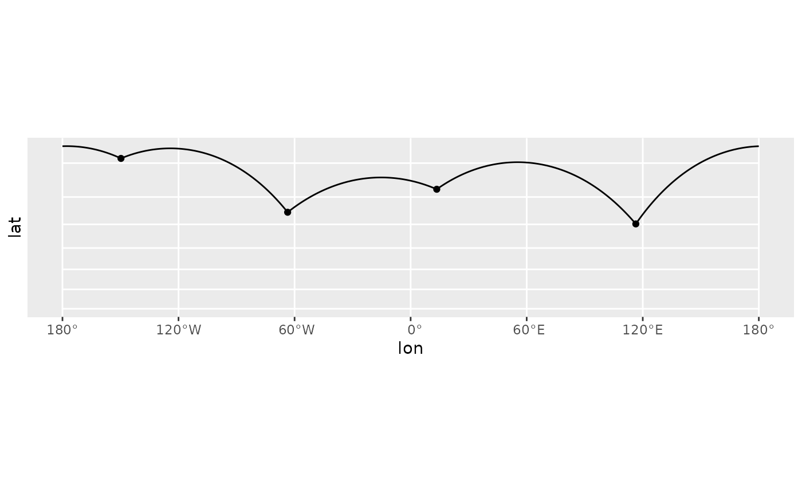
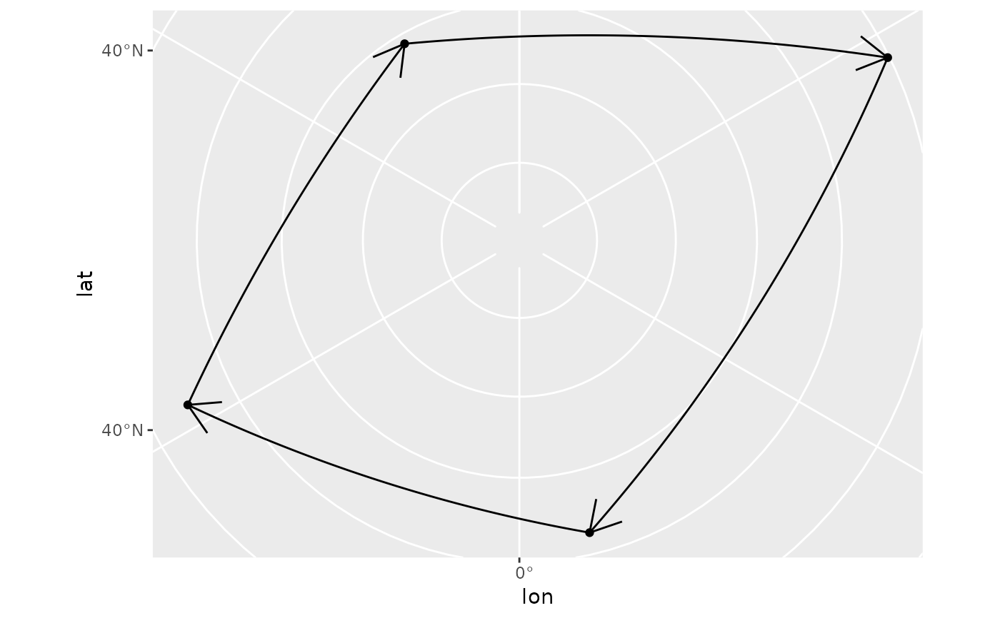

While the implementation is slightly differrent, this function is
intended to behave identically to ggplot2::geom_segment(). Use
great_circle = FALSE and detail = NULL if you wish ignore the fact
that the earth is round.
geom_spatial_segment( mapping = NULL, data = NULL, ..., crs = NULL, detail = waiver(), great_circle = TRUE, wrap_dateline = TRUE, arrow = NULL, lineend = "butt", linejoin = "round", na.rm = FALSE, show.legend = NA, inherit.aes = TRUE ) StatSpatialSegment
Arguments
| mapping | An aesthetic mapping created with |
|---|---|
| data | A data frame or other object, coerced to a data.frame by |
| ... | Passed to the combined stat/geom as parameters or fixed aesthetics. |
| crs | The crs of the x and y aesthetics, or NULL to use default lon/lat crs (with a message). |
| detail | Passed to |
| great_circle | If |
| wrap_dateline | When using |
| arrow | An arrow specification as a call to |
| lineend | |
| linejoin | How corners should be joined |
| na.rm | Should missing aesthetic values be removed? |
| show.legend | See |
| inherit.aes | See |
Format
An object of class StatSpatialSegment (inherits from StatSpatialRect, Stat, ggproto, gg) of length 3.
Examples
library(ggplot2) # visualize flights from # Halifax -> Anchorage -> Berlin -> Halifax cities <- data.frame( lon = c(-63.58595, 116.41214, 13.50, -149.75), lat = c(44.64862, 40.19063, 52.51, 61.20), city = c("Halifax", "Beijing", "Berlin", "Anchorage"), city_to = c("Anchorage", "Beijing", "Berlin", "Halifax") ) cities$lon_end <- cities$lon[c(4, 3, 1, 2)] cities$lat_end <- cities$lat[c(4, 3, 1, 2)] p <- ggplot(cities, aes(lon, lat, xend = lon_end, yend = lat_end)) + geom_spatial_point(crs = 4326) # by default, geom_spatial_segment() connects points # using the shortest distance along the face of the earth # wrapping at the date line p + geom_spatial_segment(crs = 4326) + coord_sf(crs = 3857)#># to let the projection handle the dateline, # use `wrap_dateline = FALSE` (most useful for # when using `arrow`) p + geom_spatial_segment( wrap_dateline = FALSE, arrow = grid::arrow(), crs = 4326 ) + coord_sf(crs = 3995)# to ignore the roundness of the earth, use # `great_circle = FALSE` p + geom_spatial_segment( great_circle = FALSE, arrow = grid::arrow(), crs = 4326 ) + coord_sf(crs = 3995)